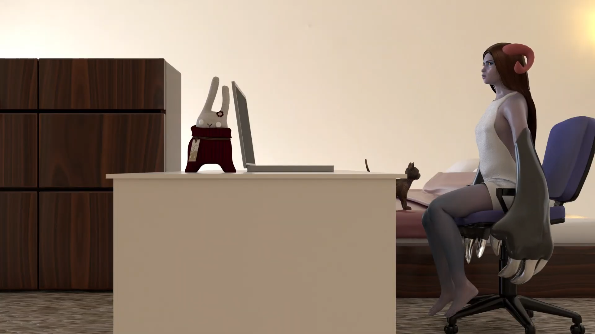

Dimutive Escapism
April 2020 | 3D Animation | Autodesk Maya
I wanted to animate myself going through one of my many daydreams. With the lock down I find myself daydreaming more often to escape some of the mundane parts of the day. When I considered how I wanted to represent myself, I figured that since the concept of the animation is based around a daydream then I could reimagine myself in an upgraded and fantastic way.
April 2020 | 3D Animation | Autodesk Maya
I wanted to animate myself going through one of my many daydreams. With the lock down I find myself daydreaming more often to escape some of the mundane parts of the day. When I considered how I wanted to represent myself, I figured that since the concept of the animation is based around a daydream then I could reimagine myself in an upgraded and fantastic way.